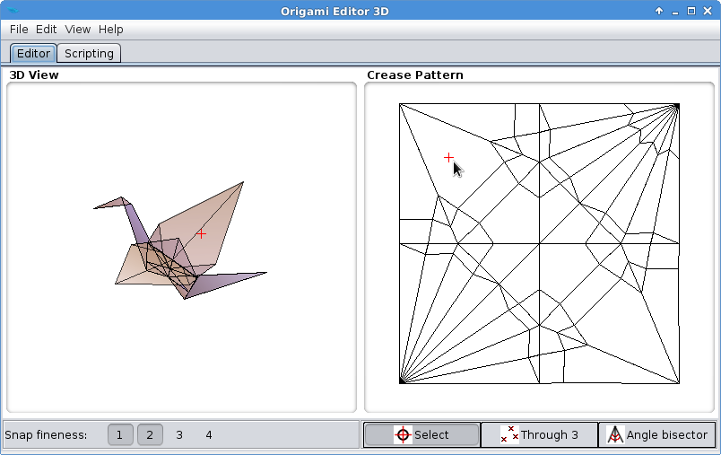
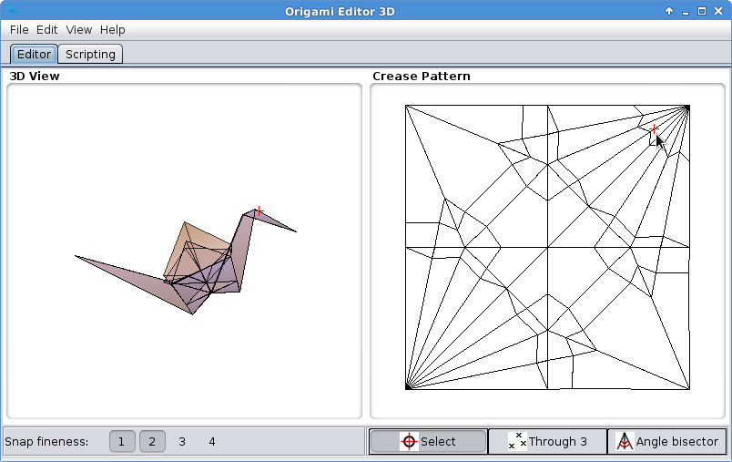

Crease Pattern
The Crease Pattern view shows the unfolded state of the origami, with all the crease lines. It can be used as a map, to locate a part of an origami, or to see where a specific point on the paper ends up in the folded state. It is also very useful for editing, as you will see in the later chapters.
Exercise
- Go to File > Example figures > Crane.
- On the right panel, you will see the Crease Pattern of the crane. Left click somewhere around the top left corner:

- You will see the red cross appear on the crane's wing in the 3D View. This means the top left corner is folded into the right wing of the crane.
- Similarly, if you left click somewhere in the top right corner, the red cross will appear on the crane's head/neck, so that corner of the paper is the head part.
